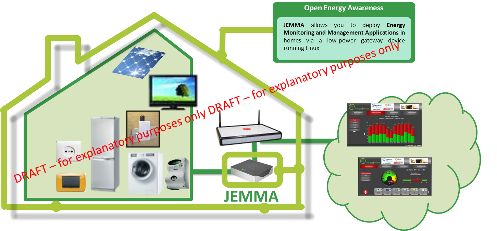

Meet Jemma!
JEMMA (Java Energy ManageMent Application) is an open-source framework which allows you to deploy Energy Monitoring and Management Applications in homes using any low-power gateway running Linux.
Open Standards and Technologies
The JEMMA software architecture is based on OSGi and leverages Apache Maven to handle dependencies, automate builds, etc.
JEMMA supports the ZigBee Home Automation 1.2 and the ZigBee Gateway Device standards resulting from of a collaboration between the Energy@home Association and the ZigBee Alliance. 3rd-party applications can be plugged into JEMMA either locally (via OSGi declarative services) or on the Cloud, through its web-based RESTful APIs.
Current Version
The current version of JEMMA (0.0.1) has been released on Oct. 15, 2013 during the European Utility Week, in Amsterdam, the Netherlands. It is currently under active development: get in contact to discover the current features being developed and the plans for future releases.
License
JEMMA is open-source: it has been released under the GNU Lesser General Public License (LGPL) version 3. LGPL conditions can be found on the GNU website.
JEMMA is managed by ISMB in cooperation with Telecom Italia, which released the initial version of JEMMA, and with the Energy@home community.